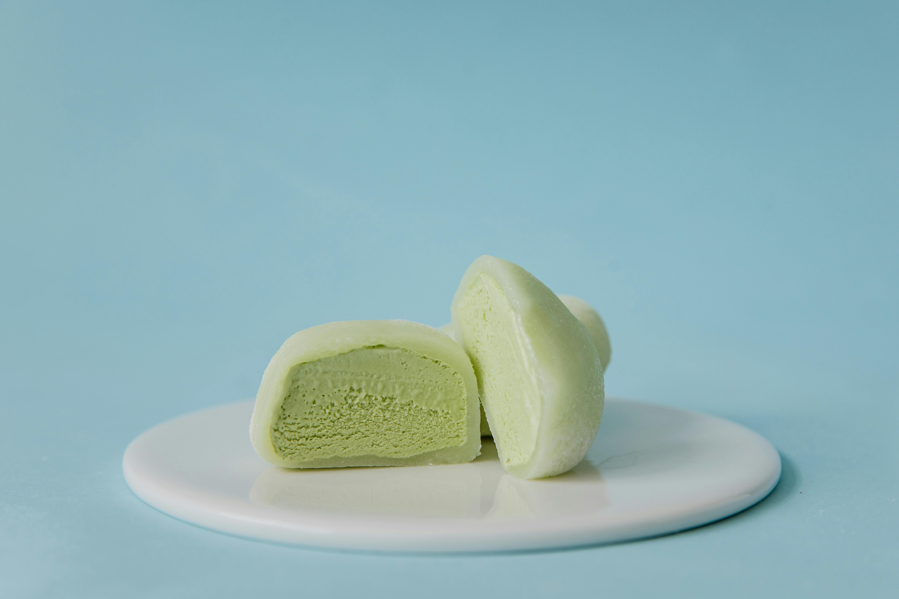

La pastelería italiana se caracteriza por su simplicidad elegante y el uso de ingredientes frescos y de alta calidad. Se basa en técnicas tradicionales con un equilibrio perfecto entre dulzura y texturas. Utiliza frecuentemente frutos secos, mascarpone, café y cítricos.
Postre de origen veneciano compuesto por capas de bizcocho de soletas embebidas en café y crema de mascarpone con huevo y azúcar. Se espolvorea con cacao en polvo y se refrigera antes de servir, resultando en un postre cremoso con contraste de sabores entre el café amargo y la dulzura de la crema.
Originarios de Sicilia, son cilindros crujientes de masa frita rellenos de ricotta dulce mezclada con azúcar, chocolate picado y frutas confitadas. Los extremos suelen decorarse con pistachos picados o cerezas, ofreciendo un contraste entre el exterior crujiente y el relleno cremoso.
Postre del Piamonte cuyo nombre significa "crema cocida". Consiste en una crema de nata, azúcar y vainilla cuajada con gelatina, servida fría con coulis de frutos rojos o caramelo. Destaca por su textura sedosa y suave que se derrite en la boca.
Dulce milanés tradicional de Navidad con forma de cúpula alta. Es un bollo esponjoso con pasas, frutas confitadas y cáscara de cítricos, elaborado mediante una fermentación lenta que le da su textura aireada característica y sabor ligeramente dulce.
La pastelería francesa es técnica, precisa y sofisticada. Se basa en métodos científicos de preparación y presenta un acabado impecable. Utiliza buttercreams, cremas pasteleras, hojaldre y chocolate de alta calidad, con énfasis en la estructura y elegancia visual.
Palito de masa choux relleno de crema pastelera o nata y glaseado con fondant. Los sabores clásicos incluyen chocolate, café y vainilla, aunque existen variaciones modernas con frutas y sabores innovadores. Su nombre significa "relámpago", posiblemente por su brillo o porque se come rápido.
Galleta crujiente por fuera y suave por dentro, hecha de almendra molida, clara de huevo y azúcar, unida por un relleno de ganache, mantequilla o mermelada. Requiere gran precisión en su elaboración y se caracteriza por su base plana y cúpula lisa, con el característico "pie" en la base.
Tarta de manzana caramelizada cocida al revés, donde las frutas se caramelizan con mantequilla y azúcar antes de añadir la masa. Al servirla se voltea, mostrando las manzanas caramelizadas en la superficie. Creada accidentalmente por las hermanas Tatin en el siglo XIX.
Significa "mil hojas" y consiste en capas crujientes de hojaldre alternadas con crema pastelera. Tradicionalmente se espolvorea con azúcar glas o se glasea con fondant blanco con líneas de chocolate, creando un contraste textural entre la masa crujiente y el relleno suave.
La pastelería japonesa (wagashi) prioriza la estética, la estacionalidad y la armonía de sabores. Es delicada, poco dulce y frecuentemente utiliza ingredientes como el matcha, frijol rojo (anko) y arroz glutinoso. La presentación es tan importante como el sabor.
Consiste en dos tortitas esponjosas similares a pancakes, unidas por un relleno de anko (pasta dulce de judías rojas). De textura suave y sutilmente dulce, es uno de los dulces más populares y conocido internacionalmente por ser el favorito del personaje Doraemon.
Dulce glutinoso hecho de arroz mochigome machacado hasta lograr una textura elástica y masticable. Puede rellenarse con anko, helado (mochi ice cream) o consumirse simple, frecuentemente acompañado de té verde. Representa la importancia de las texturas únicas en la gastronomía japonesa.
Postre con forma de pez (símbolo de buena suerte) hecho de masa de pancake crujiente por fuera y esponjosa por dentro, relleno tradicionalmente de anko, aunque modernamente también de chocolate, crema pastelera o queso. Se cocina en planchas especiales con moldes en forma de pez.
Bizcocho esponjoso de té matcha enrollado con crema batida ligeramente dulce. Combina el sabor terroso y ligeramente amargo del matcha con la suavidad de la crema, representando la fusión entre técnicas occidentales e ingredientes tradicionales japoneses.
La pastelería austriaca refleja la herencia imperial de Viena, con influencias centroeuropeas. Se caracteriza por masas ricas en mantequilla, uso de especias como la canela y el cardamomo, y rellenos de frutas, nueces y cremas. Es contundente pero refinada.
Tarta de chocolate inventada en el Hotel Sacher de Viena, compuesta por un bizcocho denso de chocolate, relleno de mermelada de albaricoque y cubierta con un glaseado de chocolate oscuro. Se sirve tradicionalmente con nata montada sin azúcar para contrastar su intenso sabor a chocolate.
Postre de masa filo extremadamente fina y estirada a mano, rellena de manzanas, pasas, canela y pan rallado. Se enrolla y hornea hasta que la masa queda crujiente y dorada. Representa la influencia otomana en la gastronomía austriaca y se sirve caliente espolvoreado con azúcar glas.
Trozos esponjosos de panqueque rasgado, enriquecido con pasas y servido espolvoreado con azúcar glas. Tradicionalmente acompañado de compota de ciruelas. Su nombre significa "desgreñado del Emperador" y era un postre favorito del emperador Francisco José I.
Considerada una de las tartas más antiguas del mundo, consiste en una base de masa quebrada con almendras y especias, cubierta con mermelada de grosella o frambuesa y una característica rejilla de masa en la superficie. Originaria de Linz, tiene un sabor aromático y textura arenosa.